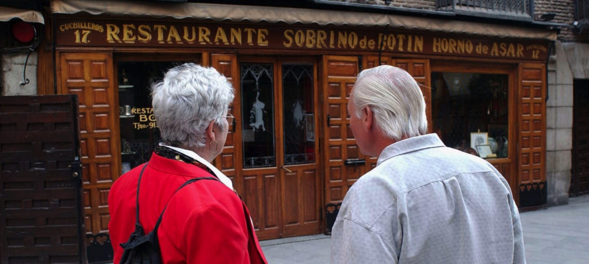
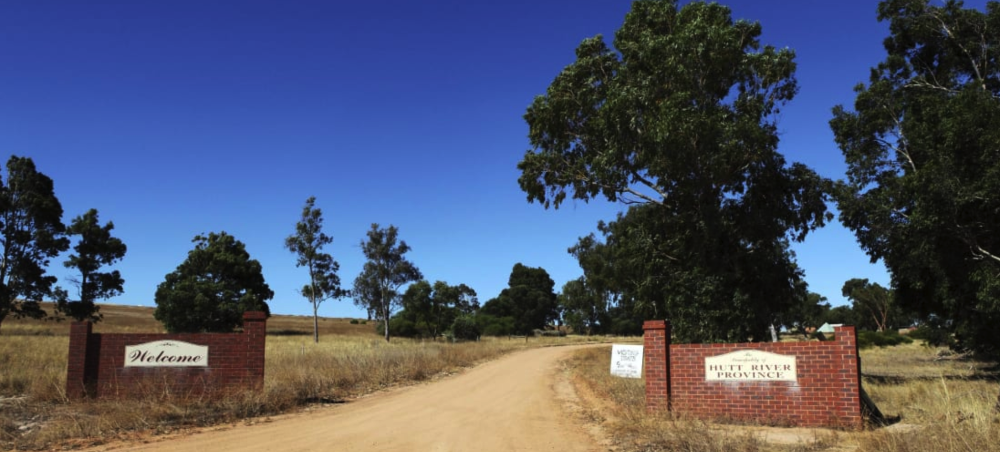

 Botin餐厅，创立于1725年的西班牙餐厅，因为疫情原因一度关门。现在客流量非常少，经营者正在想法设法，摆脱关闭的风险。
 Hutt River，坐落于一个75平方公里的农场，由一位叫Leonard Casley的王子创立于1970年；
它发行自己的钱币，邮票，护照，签证，主要收入来源是旅游观光。
目前由于新冠疫情影响，旅游下降，继承人不得不出售农场，以偿还债务。
有趣的是，该国曾于1977年，因税收问题，向澳大利亚宣战。